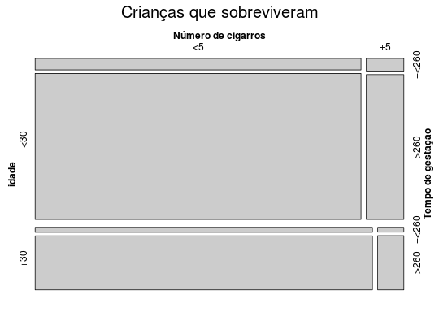
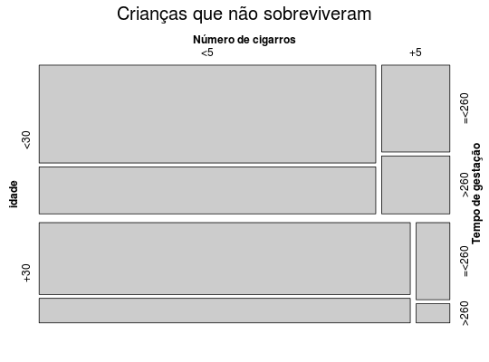

Estudo com gestantes fumantes, no qual as participantes foram classificadas segundo os fatores de idade, número de cigarros consumidos, tempo de gestação, e a condição (sobrevivência) da criança.
Um data.frame com 5 variáveis.
idadencigartgestsobressobrenPAULA (2004), Exercício 3.7.19, página 276.
Agresti A. (1990). Categorical Data Analysis. John Wiley, New York. (página 253))
data(PaulaEx3.7.19)#> Warning: data set ‘PaulaEx3.7.19’ not foundstr(PaulaEx3.7.19)#> 'data.frame': 8 obs. of 5 variables: #> $ idade : Factor w/ 2 levels "<30","+30": 1 1 1 1 2 2 2 2 #> $ ncigar: Factor w/ 2 levels "<5","+5": 1 1 2 2 1 1 2 2 #> $ tgest : Factor w/ 2 levels "=<260",">260": 1 2 1 2 1 2 1 2 #> $ sobren: int 50 24 9 6 41 14 4 1 #> $ sobres: int 315 4012 40 459 147 1594 11 124library(vcd)#>#> #>#> #> #># Paciente que sobreviveram ss <- xtabs(sobres ~ idade + ncigar + tgest, PaulaEx3.7.19) # Paciente que não sobreviveram ns <- xtabs(sobren ~ idade + ncigar + tgest, PaulaEx3.7.19) mosaic(ss, main = "Crianças que sobreviveram", labeling_args = list( set_varnames = c(ncigar = "Número de cigarros", tgest = "Tempo de gestação")))mosaic(ns, main = "Crianças que não sobreviveram", labeling_args = list( set_varnames = c(ncigar = "Número de cigarros", tgest = "Tempo de gestação")))